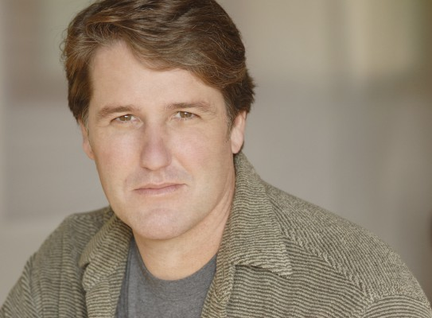

#4736 Der Ja-Sager
Alternativ: Yes Man

 IMDB-Wertung: 6.8 / 10
IMDB-Wertung: 6.8 / 10  Metascore: 0
Metascore: 0 
Carl Allen ist einen sehr langen Weg gegangen bis er sich von seinem Scheidungskummer und seinem langweiligen Job frei machen konnte. Sein neues Motto: Umarme das Leben und sage JA zu allem! Einen Bungee Sprung wagen? JA. TV-Verkaufsangebote annehmen? JA. Koreanisch lernen? JA. Seine Traumfrau finden? JA. Fans durch abgedrehte Zwerchfell-Attacken zum Lachen bringen? JA. Mit jeder Faser seines Körpers und jedem Muskel seines berühmten Gummi-Gesichts spielt Jim Carrey Carl in einer herzerfrischenden YESkapade über das JA im Leben und dessen Möglichkeiten - besonders wenn diese Möglichkeiten eine Liebesbeziehung mit einer faszinierenden und unkonventionellen Musikerin (Zooey Deschanel) beinhalten. Der Regisseur von Girls United und Trennung mit Hindernissen lädt ein: Entdecke die komödiantische Kraft des Wortes JA.
Jahr: 2008
Dauer: 104 Minuten
FSK: 6
Land: USA Studio: Warner Bros.Tonspuren: DD5.1 - ,
Untertitel: Deutsch,
Auflösung: 1080p (1920x800) Größe: 5550 MB
Genre: Komödie, Liebe
Regisseur: Peyton Reed
Drehbuch: Maksim Budarin
Soundtrack:
Darsteller:
 Jim Carrey als Carl
Jim Carrey als Carl Zooey Deschanel als Allison
Zooey Deschanel als Allison Bradley Cooper als Peter
Bradley Cooper als Peter John Michael Higgins als Nick
John Michael Higgins als Nick Rhys Darby als Norman
Rhys Darby als Norman Danny Masterson als Rooney
Danny Masterson als Rooney Fionnula Flanagan als Tillie
Fionnula Flanagan als Tillie Terence Stamp als Terrence
Terence Stamp als Terrence- Sasha Alexander als Lucy
- Molly Sims als Stephanie
 Brent Briscoe als Homeless Guy
Brent Briscoe als Homeless Guy Rocky Carroll als Wes
Rocky Carroll als Wes John Cothran als Tweed
John Cothran als Tweed Spencer Garrett als Multack
Spencer Garrett als Multack Sean O'Bryan als Ted
Sean O'Bryan als Ted Kai Lennox als Flyer Guy
Kai Lennox als Flyer Guy- Cecelia Antoinette als Woman Bank Employee
 Patrick Labyorteaux als Marv
Patrick Labyorteaux als Marv Jamie Denbo als Marv's Wife
Jamie Denbo als Marv's Wife- Peter Giles als Loan Applicant , scenes deleted
- Rebecca Corry als Yes Patron
 Pride Grinn als Yes Patron
Pride Grinn als Yes Patron-  Kerry Hoyt als Yes Patron
- Anna Khaja als Faranoush
 Maile Flanagan als Janet
Maile Flanagan als Janet- Roni Meron als Bigfoot Waitress
 Graham Shiels als Scary Boyfriend
Graham Shiels als Scary Boyfriend- Brandon Walter als Mormon
 Mike Gomez als Father at Homeless Shelter
Mike Gomez als Father at Homeless Shelter E.J. Callahan als Farmer
E.J. Callahan als Farmer Jarrad Paul als Reggie
Jarrad Paul als Reggie- Aaron Takahashi als Lee
- Vivian Bang als Soo-Mi
 Sally Stevens als Singer
Sally Stevens als Singer Eric Bradley als Singer
Eric Bradley als Singer Lisa Long als Airline Representative
Lisa Long als Airline Representative Mary-Pat Green als Tour Guide
Mary-Pat Green als Tour Guide Stephanie Hodge als Ticket Lady
Stephanie Hodge als Ticket Lady- Matt Miller als Corporate Exec
- J.R. Nutt als Caddy
 Don Abernathy als Convention Goer / Airport Traveler , uncredited
Don Abernathy als Convention Goer / Airport Traveler , uncredited Moises Amaya als Nude Convention Patron , uncredited
Moises Amaya als Nude Convention Patron , uncredited- Tj Austin als Nude Convention Patron , uncredited
- Deborah Capstone als Nebraska Football Fan , uncredited
- Guy Chapman als Loan Applicant , uncredited
- Stephanie Edmonds als Beautiful Yes Girl , uncredited
- Robert Ian Evans als Lost Boyfriend / Airport Traveler , uncredited
 David Fernandez Jr. als Nudist Conventioner , uncredited
David Fernandez Jr. als Nudist Conventioner , uncredited- Jenn Gotzon als Video Store Girl , uncredited
- Alan Gray als Bigfoot Bar Patron , uncredited
Datei: X:\2008(G-M)\Ja-Sager, Der (2008, FSK6, 1920x800).mkv seit 10.11.2016
Festplatte: HD 2008(G-Z)-2009(A-F)
 Es gibt insgesamt 73 Filme in der Gruppe '2008(G-M)'
Es gibt insgesamt 73 Filme in der Gruppe '2008(G-M)'